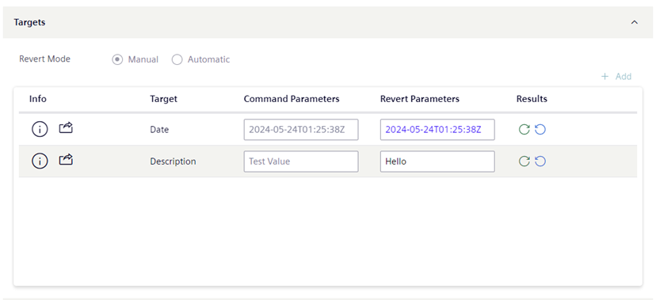
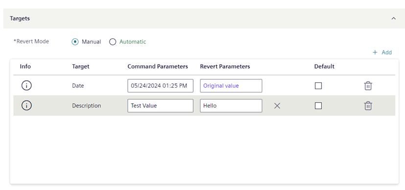

Task Targets
The Targets expander specifies the target objects on which the task commands will be executed.

The task template determines the available commands.
- You can click the Add button, which opens the Browser Object dialog where you can select the targets where the commands will be performed.
- Target objects must be of the appropriate type or object model for the action being performed by the task. The Select data point dialog box is pre-filtered based on the allowed object models configured in the task template.
- You can add the same object more than once if it belongs to different views. This is helpful with specific functions that must be applied only to certain view sublevels.
- To be able to save, a task must have at least one target object.
- To remove a target object, click on the rightmost column.
- To view the information such as the Full Path, click .
NOTE: If the commands of a task have editable parameter values, a Command Parameters and Revert Parameters column become available.
When you are in Edit mode, you can set the default parameter for the task:

Revert Settings
At the top of the Targets expander, the Revert field indicates how the commanded targets are set back to their original values, for example, from Unlocked back to Locked, when the task ends:
- Automatic: when the due date is reached, the commands are automatically reverted.
- Manual: when the task commands are sent, a Revert command becomes available for the operator to click.
If the task can be reverted, you can optionally switch between the Manual and Automatic settings.

Conditional Revert Restrictions:
Forced manual revert
For a task set to automatic revert, a manual revert will anyway be forced in the following cases:
- The operator who started the task does not have the authorization to execute tasks that have the automatic revert.
- The operator who started the task has the authorizations for executing tasks with automatic revert but one or multiple task targets have a validation profile (higher than Enabled or Four Eyes) that requires a password (more than the operator’s comment). In these cases, the operator will be prompted to run the task with forced manual revert.
No revert commands
The action performed by this type of task cannot be reverted.
Command and Revert Parameters

In the Targets expander, the Command Parameters and Revert Parameters column become available if the commands of a task have parameter values that can be overridden.
- For commands, to the currently measured value of the target.
- To reset a parameter to its initial value, clear the field, or click .
Initial Values for Parameters
If no applicable Default is set (see next section), when you add a target object its command and revert parameters are initially set to the values defined in the task template, if available. Otherwise, the values are set as follows:
- For commands, to the currently measured value of the parameter.
Default values of parameters
You can select the Default check box to propagate the parameter values on that row to all other targets of the same type.
If you manually edit a parameter that had the default value propagated to it, the new value is highlighted in bold to indicate that it differs from the chosen default value.
If you modify the parameter values on the row set as Default, you are prompted for how to propagate these changes to other objects:
- Yes: Apply the new default values to all target object of the same type, including targets whose parameters were manually edited to differ from the default.
- No: Apply the new default values only to target objects of the same type that were not manually edited to differ from the default.
Avoid side effects when executing or reverting commands
When setting task targets, to avoid unwanted outcomes make sure the dropped target objects are all homogeneous. All targets must:
- Be of the same type (for example, Analog Input)
- Have the same units (for example, do not mix % and °F, or W and kW)
- Have the same parameters (for example, do not mix On/Off with Open/Close).
Additionally, in the Parameters column, check that they display the same unit of measurement (for example, % or °F) or the same set of parameters (for example, On/Off or Open/Close).